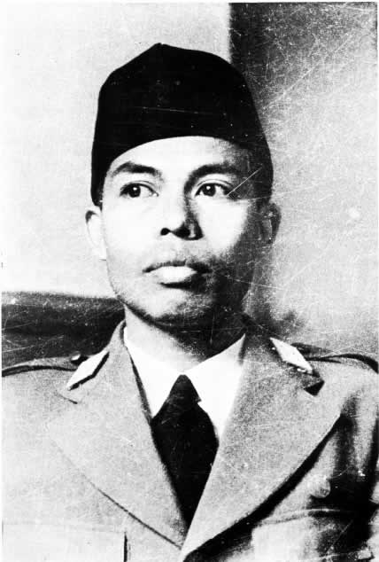
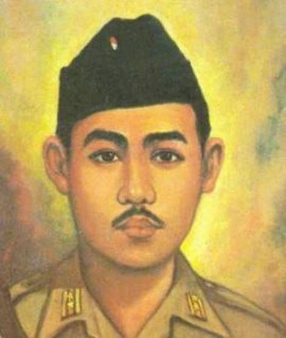

Tokoh-Tokoh Penting
Para pahlawan yang memimpin perjuangan kemerdekaan

Bung Tomo
Pemimpin perlawanan di Surabaya

Jenderal Soedirman
Panglima Besar TNI

I Gusti Ngurah Rai
Pahlawan Puputan Margarana